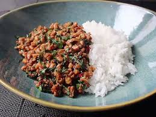

hello! I m Grace
i am a food blog is an award winning old school food blog that’s been around since 2010 featuring hundreds thousands of easy, fun, and delicious modern Asian- and globally-inspired recipes that celebrate the joy of cooking. Our tips and tricks will have you cooking like a pro in no time. Pull up a chair, stick around for awhile, and let’s eat together
Our Best Chicken Recipes:
Real Deal Chicken Pho
A flavorful authentic chicken pho that takes about 3 hours and a whole chicken to make, and it's 100% worth it.
As a Vietnamese person, making the food of my people is deeply important to me. This is my personal chicken pho recipe that I’ve been refining for the past 10 years. It’s different (and less accessible) than the easier one in our cookbook. I’m finally putting it up because Steph wanted to be able to make it rather than ask me to do so every time she craved chicken pho.

Thai Basil Chicken
This quick and easy Thai classic is a just-the-right-spiciness stir fry that's an incredible taste payoff for minimal work.
I LOVE Thai basil chicken. It gets my heart rate going not only because it’s perfectly spicy but also because it’s delicious. This is a super easy stir fry that is an incredible taste payoff for minimal prep. Goodbye delivery and hello home cooked meal!
